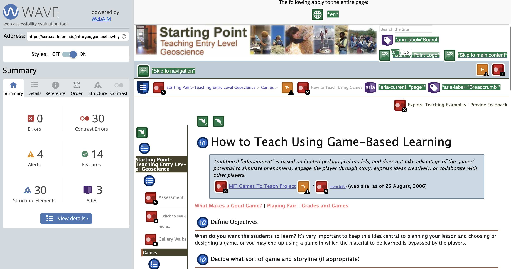
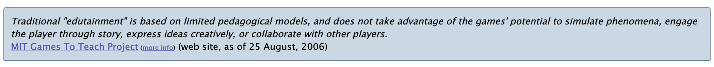
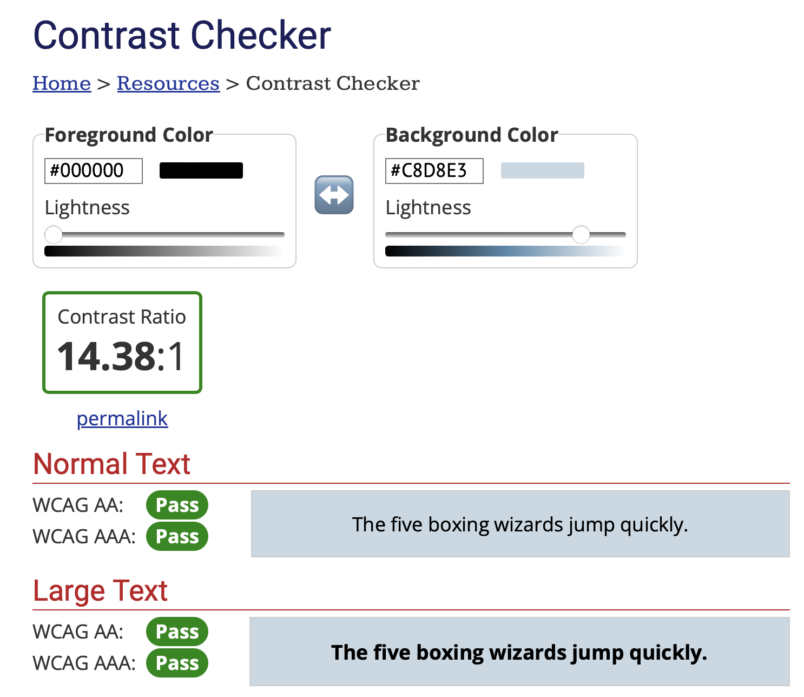
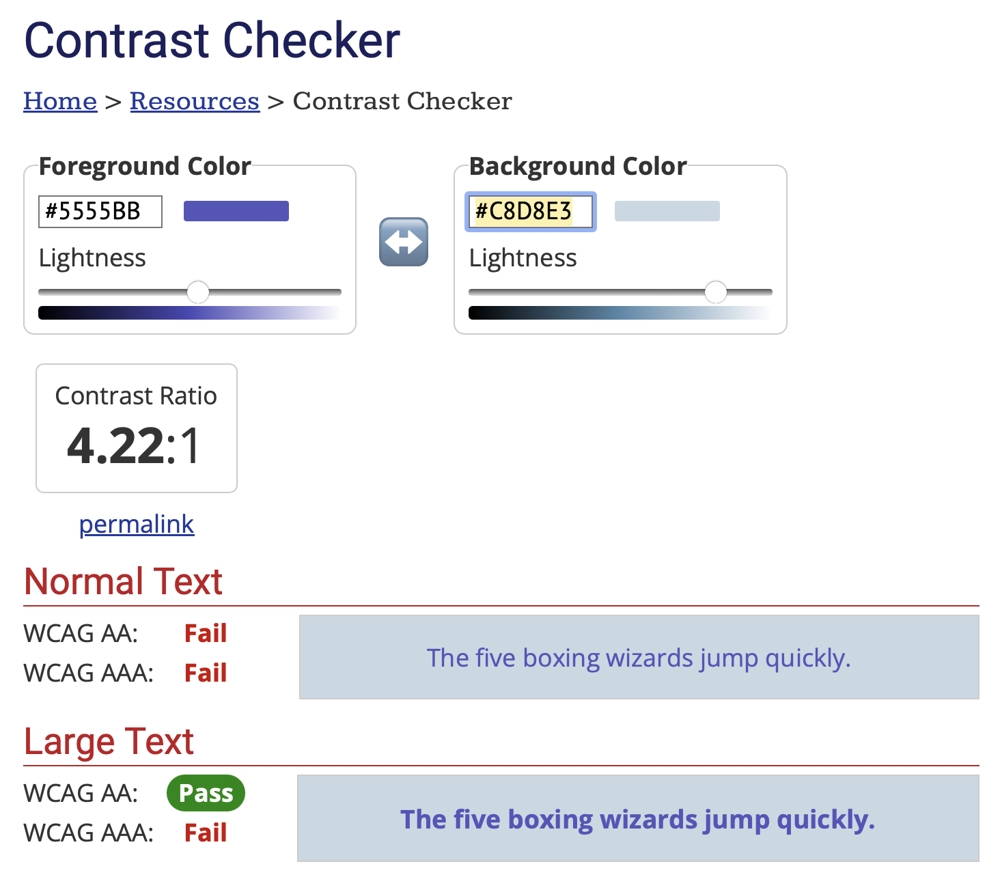
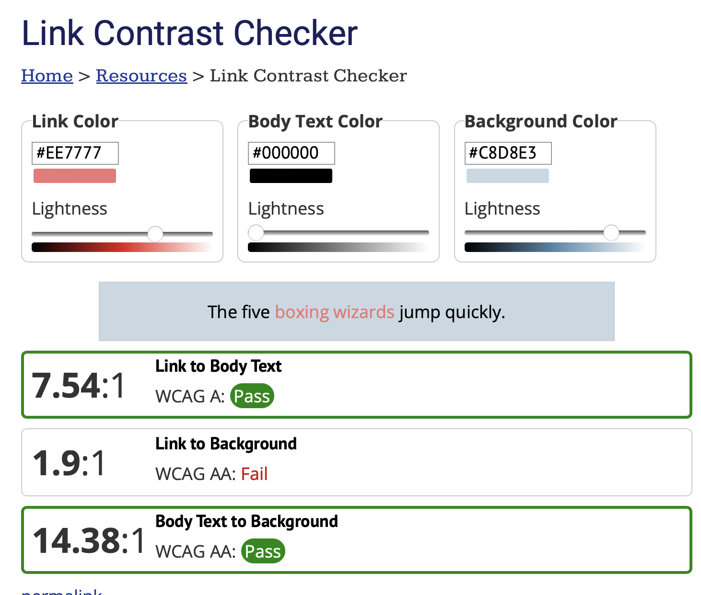
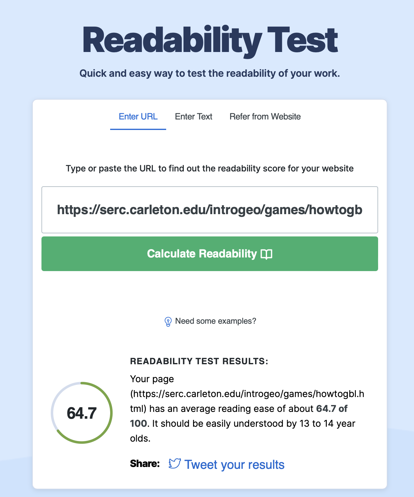
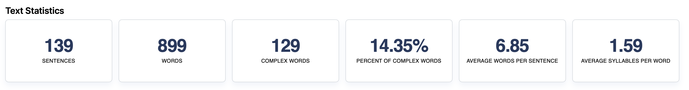

WAVE Web Accessibility Evaluation Tool
One of the biggest issues with this site is the low contrast between a lot of the text and background.
There are also a couple of warnings where the text is very small on the page.
The site contains alt text and aria labels to help provide further information about elements. This will be useful to users that need screen readers.
These aria labels mark things like the search and also the breadcrumb trail. Both of these are good navigational features, so having them marked with
aria labels makes this site more accessible.

WebAIM - Contrast Checker
Element for contrast comparison:

Contrast between background and black text:

Contrast between background and link text:

Through use of Web AIM, we can see that the contrast between the black text and blue box meets all AAA requirements. This makes this text suitable for
users who are colourblind.
Whereas the colour of the link text only meets the AA requirements for large text. As shown in the sample from the website, the text is not large, so
this makes the contrast between these unsuitable.
Contrast between background, text and link text:

After the link has been clicked, it turns to a red colour. We can see using the link contrast checker, that the link has a good contrast from the body text,
but doesn't contrast enough from the background. This means the either the colour of the link once clicked or the box would need to be changed to help
increase the contrast and make the site more accessible.
WebFX - Readability Test Tool
The website was given a score of 64.7 out of 100. WebFX says that the site has an average reading ease and should be easily understood by 13 - 14 year olds.


By looking at the statistics, we can see that there are around 6.85 words per sentence on average. This shows that the sentences on the site aren't too
long and text heavy. The text comprises of 14.35% of complex words. This means in comparison to the full text, there aren't many complicated words, making
it easier for users to read and understand.
Overall, this website is pretty accessible. It has a good readability score and has no errors displayed on Wave.
The main areas for improvement on this site are the contrast of certain elements and text. The other problem is the text size in some areas.
This site could be improved by enlarging the text in certain areas and by changing some of the colours to improve the contrast. This would also help the
website meet AA and potentially AAA standards.
Another possible improvement that could be made to the site is the readability of the text. This would help to make it readable by a wider age gap. But given
the site is aimed towards teachers, I don't believe this is a necessary change given the site already has quite a high score.
Task 2
Accessibility on my website:
I have attempted to organise my headings in order. This includes making main titles h1 - such as 'IL', 'Lab' and then subheadings in h2 - 'Task 1', 'Task 2' etc.
For some tasks, I have also added task subheadings in h3. This helps to keep the page well ordered for the screen reader. It might help to include further
subheadings in h4 tags rather than making text bold. I think this would depend on whether it is a subheading or just a bit of emphasised text.
I have not included any aria labels/tags on my website yet. These would also be a good feature to add to provide further information to screen readers.
I haven't checked all of my images for contrast, I did check the image used in the lab 7 task. On reflection I should do this with all images as I add them
to my site to check for good contrast levels. Further improving accessibility for people with visual impairments.
When I was initially adding css to this site, I made the header bar a light blue colour and made the text white. It was brought to my attention that
this was not an appropriate colour scheme as the white writing was difficult to see on the light blue background. I have since changed the nav bar
background to black as this has a good contrast with white text.
In lab 5, I considered the professional writing characteristics when writing sample text. I haven't done this for any other text on this site. This might
be good to consider when working through lab tasks or writing reflections as these characteristics would help to make this website more readable.
Labwork
Task 1/2
Despite using different track tags, the captions don't appear to work on any of these videos.
I have conducted some research to try and find out why this is, but am currently unable to find a solution.
A copy of my vtt file can be found in the edited-video folder within the video folder of my project files.
For my final project, I will need to work on getting captions to work as I want to make sure any videos on my website are accessible.
Task 3Aria Labels: W3Schools - Accessibility Labels
To improve accessibility on my website and on my MAD(B) site, I would like to add aria labels.
This website gives more information on the appropriate tags to use in html. Including labels, aria-labels and legends(for control features like checkboxes).
Contrast Check: WebAIM - Contrast Checker
To further improve the accessibility for those with visual impairments, I can check the contrast between my test and background colour on WebAIM.
This website allows me to input the colour codes of any text and background colour and then shows whether these colours have a good contrast level.
Contrast Check on Images:
To check for good contrast on my images, I can put them into greyscale mode before adding them to my website. This allows for me to check the contrast
level is good before attaching them to the website.
General Accessibility Check: Wave - Web Accessibility Evaluation Tool
I want to make sure that my website is structured properly, using header tags in order of the heading layout.
To make sure I do this, I will start by placing my website in the Wave checker. After receiving feedback from this, I can adjust headings where required.
Website Readability:
When creating my website in MAD(B) I will use the professional writing characteristics to make sure that I include any appropriate characteristics when
writing the text for my website.
I will then use the Readability Tool to assess how readable my website is. Readability Test Tool
This will give me a score on how readable my website is. If it isn't easy to read then this will allow for me to adjust my text to make it more easily
understandable.